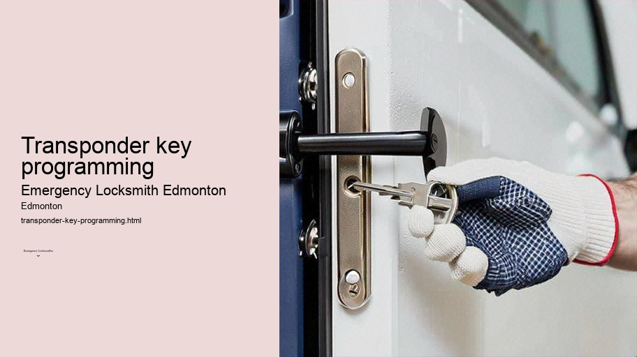

News
24/7 Emergency Locksmith Services
24/7 Emergency Locksmith Services
Emergency Locksmith Services
Residential lockout assistance
Automotive lockout services
Broken key extraction
Emergency lock repair and replacement
Commercial Locksmith Solutions in Edmonton
Commercial Locksmith Solutions in Edmonton
Highsecurity lock installations
Master key systems and rekeying services
Access control system integration
Panic bar installation and maintenance
Residential Locksmith Services in Edmonton
Residential Locksmith Services in Edmonton
Home lockout response
Rekeying existing locks for homes
Installation of new locks and deadbolts
Repairing or replacing residential locks
Automotive Locksmith Services in Edmonton
Automotive Locksmith Services in Edmonton
Car key duplication and replacement
Transponder key programming
Ignition repair and replacement services
Vehicle trunk opening
About Us

Transponder key programming
Motorcycle locksmith Edmonton
Transponder Key Programming: The Security Evolution of Modern Vehicles
In the landscape of automotive security, transponder key programming has emerged as a pivotal innovation, reshaping the way we interact with our vehicles.
Ignition repair and replacement services
.
Local locksmith services Edmonton
Gone are the days when a simple metal key could grant you access to your car and start its engine.
Key cutting service Edmonton
Trusted locksmith Edmonton
As theft rates climbed and technology advanced, the need for more secure measures became paramount.
Garage door lock repair Edmonton
Thus began the era of transponder keys – an amalgamation of traditional keys and modern radio frequency identification technology.
To understand transponder key programming, one must first comprehend what a transponder key is. It's essentially a regular car key with a small chip – known as a transponder – embedded within it. This chip communicates with another device inside your vehicle's ignition system via radio signals. When you insert the key into the ignition and turn it, the car sends out a signal to which the chip in your key responds.
Locksmith near me Edmonton
If this response matches what the vehicle expects, it will disable its immobilizer system and allow you to start the engine.
The genius behind this lies in its simplicity; if someone attempts to hotwire or use an unauthorized copy without that specific programmed chip, they'll be met with silence from an unresponsive engine. Each transponder chip is unique, employing rolling codes that change each time the car is used, making duplication exceedingly difficult for would-be thieves.
However sophisticated these systems may be though, there are times when new keys need to be made or existing ones reprogrammed – perhaps due to loss or damage of original keys or ownership changes requiring security updates. This is where transponder key programming becomes essential.
The process requires both technical knowledge and specialized equipment since it involves not only cutting a new physical key but also properly introducing that new friend into your vehicle's electronic circle by linking its unique signature to your car's onboard computer system.
Lock rekeying Edmonton
Automotive locksmiths or dealerships usually handle this task because they have access to proprietary databases containing manufacturer-specific information vital for successful programming.
Motorcycle locksmith Edmonton
Programming a new transponder key typically includes several steps:
1. Verification: Confirming ownership and ensuring that no unauthorized copies are being made.
2. Cutting: Shaping a blank key to fit into your vehicle’s locks.
3. Programming: Linking your new transponder chip’s code with your vehicle’s immobilizer system.
4.
Mailbox locks and keys Edmonton
Testing: Making sure that all functionalities work correctly—both unlocking/locking doors and starting up the engine.
It's important not only for convenience but also for safety reasons that these steps are followed meticulously; any misstep can result in malfunctions leaving drivers either stranded or vulnerable.
Interestingly enough, while such advancements have provided substantial security benefits they've also introduced complexity regarding cost and accessibility; creating potential headaches for those who find themselves in need of replacement keys quickly or at affordable prices.
Nonetheless, despite such concerns over costs or potential inconveniences during reprogramming phases – there's no denying that integration of RFIDs into vehicular access systems has significantly reinforced barriers against unauthorized entry and operation — forging strides towards greater peace-of-mind for automobile owners worldwide.
As we continue advancing further into an increasingly digitized age where smart technologies permeate even deeper aspects of everyday life—it stands to reason enhancements in areas like auto-security will evolve alongside them; maintaining vigilance against threats old & new alike through innovations like those seen within realms encompassed by practices involved around Transponder Key Programming—heralding in safer tomorrows on roads everywhere.
Check our other pages :
Installation of new locks and deadbolts
Rekeying existing locks for homes
Car key duplication and replacement
Master key systems and rekeying services
Ignition repair and replacement services
Frequently Asked Questions
What is transponder key programming, and why might I need it for my vehicle?
Transponder key programming is the process of coding a transponder chip in a car key to communicate with the vehicles immobilizer system. You might need it if you have lost your keys, they have been stolen, or you require a spare key for your vehicle.
Can an emergency locksmith in Edmonton program a transponder key for my car?
Yes, most emergency locksmiths in Edmonton are equipped with the necessary tools and technology to program transponder keys for various makes and models of vehicles.
How long does it take for an emergency locksmith in Edmonton to program a new transponder key?
Programming a new transponder key typically takes anywhere from 15 minutes to an hour. The exact time can depend on the make and model of the vehicle as well as the complexity of the programming process.
Will my newly programmed transponder key work just like the original?
Yes, once properly programmed by an experienced emergency locksmith, your new transponder key should function just like the original one, allowing you to start your engine and operate your vehicle securely.